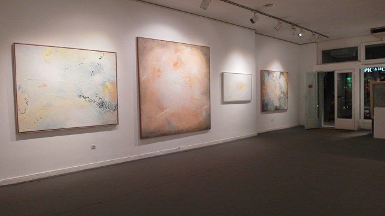
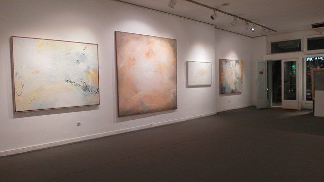
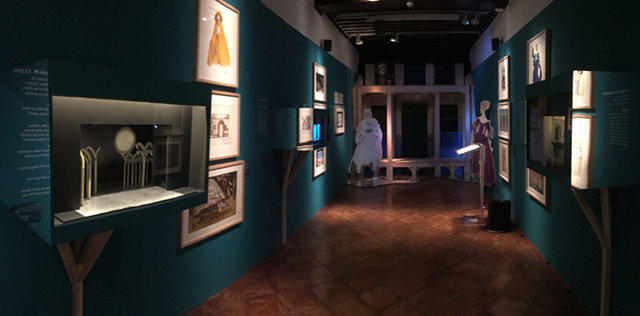
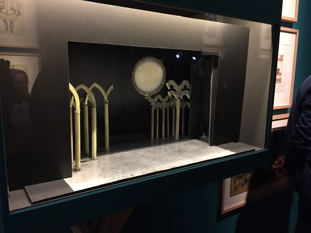
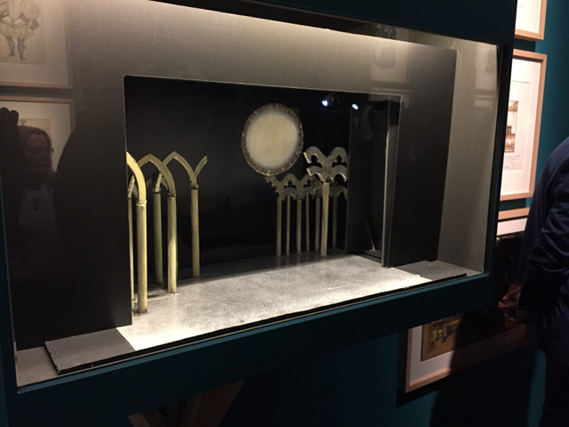

Repercusión de la exposición retrospectiva
Comienzan a llegarnos los primeros titulares sobre la exposición de Arturo, en Alcalá de Henares hasta el 16 de julio.
En Dream! Alcalá: Santa María La Rica acoge una nueva exposición del pintor y escenógrafo Arturo Martín Burgos.
También en la página del Ayuntamiento.
En Noticias para municipios: ALCALÁ DE HENARES/ La ciudad acoge la exposición sobre el recorrido artístico de Arturo Martín Burgos.
Exposición retrospectiva
Del 12 de mayo al 16 de julio Arturo nos invita a su primera exposición retrospectiva. Cerca de 70 piezas que son un resumen de su trayectoria, desde el 85 hasta ahora. Entrada libre en el Antiguo Hospital de Santa María la Rica, en Alcalá de Henares. ¡No os la perdáis!

Arturo, nominado al primer premio Talía
Arturo Martín Burgos ha sido nominado a la mejor escenografía en la primera edición de los premios Talía de la Academia de las Artes Escénicas, por la obra "Rif (de piojos y gas mostaza)" de Laila Ripoll y Mariano Llorente.


Vídeo: Pintar con Matisse.
Nuevo vídeo de Arturo, donde tenemos la ocasión de disfrutar viéndole pintar al estilo del gran Matisse. ¡No os lo perdáis!
Exposición: Intimidad
Del 1 al 26 de junio 2022, el museo de la ciudad de Móstoles expone INTIMIDAD, veinte años después de su realización.
Tras haber sido expuesta en múltiples salas lo largo de España, recuperamos esta exposición que fue cancelada en 2020. Gesto expresionista y gran formato sobre fotografías impresas en lienzo, dibujos y bocetos preparatorios. Pintura visceral y colorista al servicio de un tema universal de la pintura: el desnudo femenino, en este caso en el marco autobiográfico de la intimidad conyugal.
Prorrogada la exposición "¿Se puede pintar la música?"
Ahora hasta el 30 de junio, de 10h a 20h en el Real Conservatorio Superior de Música. 18 obras de tema musical elaboradas desde 1998.
Tea Rooms. Mujeres obreras (2022)
Nueva escenografía de Arturo para la obra "Tea Rooms. Mujeres obreras". Texto de Luisa Carnés, en versión de Laila Ripoll. La obra se representará en la sala Jardiel Poncela del Teatro Fernando Fernán Gómez, de martes a domingo hasta el 24 de abril de 2022.
Entradas aquí. Según la crítica de Cinema Gavía:
“Es digno de destacar el trabajo escenográfico de Arturo Martín Burgos. Logra aprovechar al máximo las posibilidades de la menor de las salas del Fernán Gómez. Con una cuidada distibución de los elementos, crea un espacio íntimo en el que el espectador se siente parte de lo que sucede en escena. Es un grandísimo acierto el diseño del escaparate que se convierte en una ventana a la calle, que es contraste y complemento del microcosmos que forman las protagonistas.”

Exposición: ¿Se puede pintar la música?
Durante tres meses tendremos la oportunidad de disfrutar de 18 obras de tema musical, elaboradas desde 1998. Algunas de ellas disponibles en esta web. La exposición estará hasta el 7 de mayo de 2022 en el Real Conservatorio Superior de Música.

RIF (De piojos y gas mostaza) (2021)
Nueva escenografía de Arturo para la obra "RIF (De piojos y gas mostaza)". De Laila Ripoll y Mariano Llorente. Hasta el 30 de enero el la Sala Valle Inclán del Centro Dramático Nacional.
Entradas aquí. Según la crítica de EnPlatea:
“Una propuesta que comienza alto con la escenografía de Arturo Martín Burgos que convierte la sala en un frente de guerra y torna en cabaret, bar y espacio de variedades(…)”

Vídeo: Entrevista con Arturo Martín Burgos.
Realizado dentro del XXIV Festival de Teatro Clásico de Peñíscola, Arturo nos cuenta qué hace un escenógrafo o cómo se aprende la profesión.
Vídeo: Disfruta dibujando abstracto.
Nuevo vídeo de Arturo, donde vamos a disfrutar dibujando abstracto al estilo de Ràfols Casamada.
Vídeo: De Kooning — El gesto vital
Nuevo vídeo de Arturo, en esta ocasión invitándonos a pintar como De Kooning.
Escenografía en diciembre de 2020
En este mes de diciembre tienes una oportunidad para ver las escenografías de Arturo en directo. Es el reestreno de 24 horas en la vida de una mujer, de Stephan Zweig. En el Teatro Galileo del 4 de diciembre al 10 de enero.
Vídeo: Polifonía del XVI vs. Expresionismo abstracto
Nuevo vídeo de Arturo publicado en su canal.
Arturo Martín Burgos en el Museo extremeño e iberoamericano de arte contemporáneo (MEIAC)

El Museo extremeño e iberoamericano de arte contemporáneo (MEIAC) incorpora a su colección de pintura la obra de Arturo Martín Burgos titulada Paisaje de Vermont (1989, técnica mixta sobre lienzo, 272 x 224 cm).
El cuadro ha sido donado al museo por el galerista Ángel Romero, con quien Arturo trabajó en los años 90 realizando varias exposiciones individuales y colectivas en la galería que lleva su nombre. El lienzo forma parte de un conjunto de obras de gran formato de varios artistas que trabajaron para la galería entre los que se encuentran, entre otros, Manuel Rufo, Elena Blasco o Carlos León.

Exposición individual en el Museo de la Ciudad de Móstoles
Nota: exposición retrasada por contingencia COVID-19, hasta nuevo aviso.
Seleccionado convocatoria de espacios expositivos 2020. Con el proyecto Revisitando Intimidad. Del 18 de marzo al 12 de abril de 2020, en el Museo de la Ciudad de Móstoles. En palabras del artista:
La serie de pinturas y dibujos Intimidad comienza con algo tan sencillo como unas fotografías personales. Hace casi veinte años. Y continúa hasta la actualidad. Una serie de instantáneas de vivencias personales intimas, relacionadas con la vida cotidiana que utilizo desde entonces a modo de soporte pictórico.
Así, las fotografías se cubren de trazos de pintura, colores, texturas y pinceladas con líneas gruesas y delgadas, largas y cortas… las imágenes que un día tuvieron identidad propia pasaron a convivir con una abstracción. Lo que en un comienzo no fueron sino bocetos e ideas trazadas a modo de preparación, se convierten a la postre, en una obra por sí misma, sólida y reveladora: mi intimidad.

Escenografía: Mercado de amores en Mérida
Arturo realizará la escenografía para la obra Mercado de amores de Eduardo Galán sobre obras de Plauto, dentro del Festival de Teatro Clásico de Mérida 2020. Fechas por confirmar.
Arturo ya estuvo en Mérida en 2018 con la escenografía de Nerón. Puedes leer una crítica sobre aquel montaje:
Arturo Martín Burgos, el escenógrafo, ha aprovechado, casi en su totalidad, la boca del Teatro Romano. Y esto es un punto a favor del montaje, puesto que entiende el desarrollo de la historia en la totalidad del monumento.
Escenografía: Fortunata y Benito en Teatros del Canal
Arturo realizará la escenografía para Fortunata y Benito, de Laila Ripoll. Estreno el 7 de febrero de 2020 en los Teatros del Canal de Madrid. Más información y entradas.
Exposición Individual Lo Invisible: Pinturas sobre música
Del 16 de noviembre al 8 de diciembre de 2018 la Galería Gaudí de Madrid abre sus puertas a la exposición individual del pintor Arturo Martín Burgos.
Cerca de 50 obras (lienzos de todos los formatos, dibujos y collages) componen esta muestra de trabajos realizados durante los últimos diez años por el pintor madrileño.
Basados en la música de Schoenberg, Bruch y en su mayor parte del compositor francés Olivier Messiaen, los cuadros buscan un acercamiento gestual a la música, tan salvaje como reflexivo, que invita al espectador a disfrutar de emociones y experiencias cercanas a la pura sensación física y sonora del hecho musical.
 



Exposición: Lope de Vega en la escenografía teatral
En la Casa Museo Lope de Vega de Madrid, del 27 de abril al 2 de junio de 2017.
El comisario de la exposición Manuel R. Massip selecciona para esta muestra varios bocetos de diversas escenografías, incluyendo la maqueta realizada para La Judía de Toledo.

 
